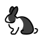
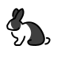
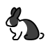

dance monkey
mirror on/off
playback speed

x
loop section
enter the section stop & start time (in min:sec format), then click the loop button
from
paste current time
to
paste current time
Your loop end time is before the start time!
start delay
enter how long to wait until playing the video, then hit the stopwatch
sec


 
